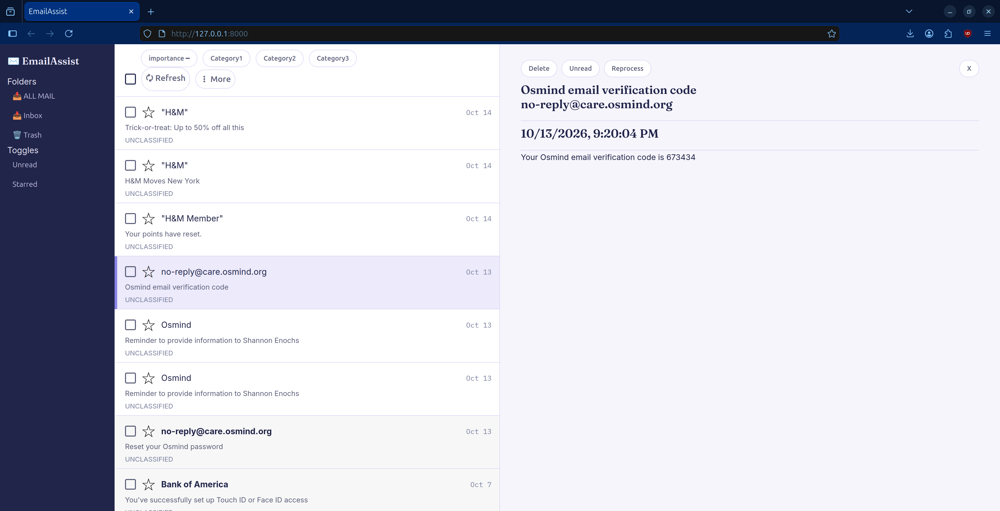
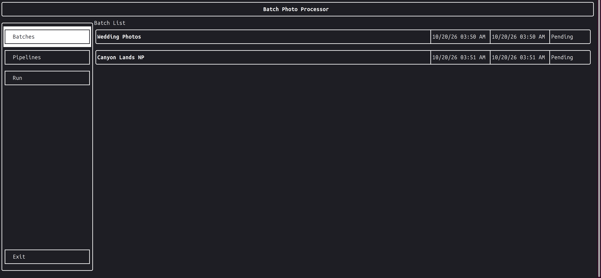

EmailAssist
Motivation: Tired of sifting through a cluttered inbox.
Description: An email website that allows you to to use AI to classify and rate an email's importance.

Motivation: Tired of sifting through a cluttered inbox.
Description: An email website that allows you to to use AI to classify and rate an email's importance.

Motivation: Wanted a simpler way to modify a bunch of images at once.
Description: A TUI that allows you to set up pipelines of image manipulation and run them efficiently in the background.
